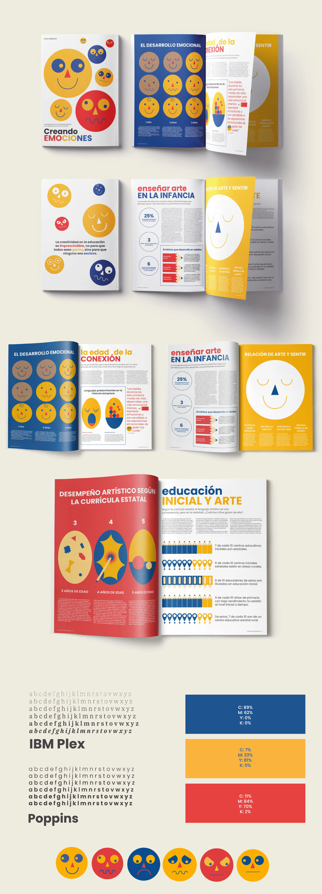

Editorial
Creando emociones
Creando Emociones es un proyecto editorial que busca visibilizar la importancia de la expresión plástica en el desarrollo emocional durante la primera infancia (0 a 6 años). Está dirigido a docentes de educación inicial estatal en Lima, Perú, y propone herramientas visuales para enriquecer su labor pedagógica.
A través de íconos, ilustraciones y un enfoque accesible, el proyecto resalta el impacto positivo del arte en el desarrollo integral de las niñas y niños, considerando sus principales lenguajes expresivos: artes plásticas, música, juego e imitación.
Creando Emociones es, ante todo, una invitación a educar desde la sensibilidad, el color y la emoción.
↑